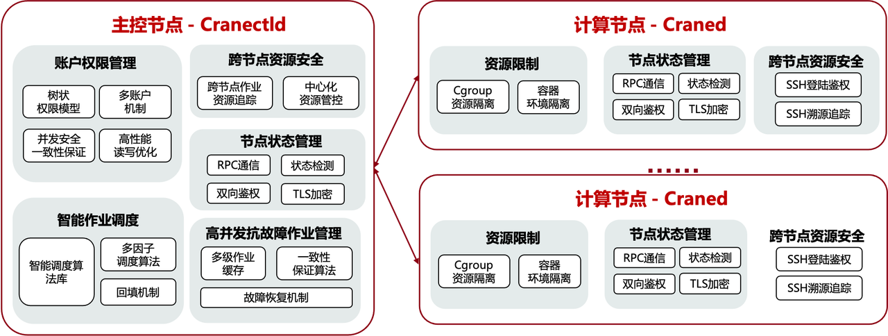
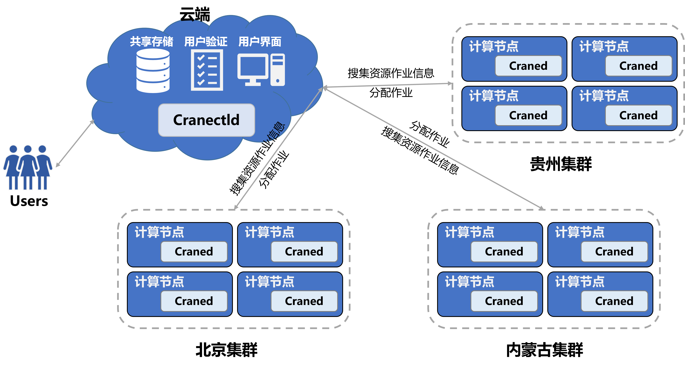

CraneSched 简介
鹤思（CraneSched）是北京大学高性能计算校级公共平台自主研发的分布式智能调度系统，团队在总结高性能公共平台运行近六年的管理和维护经验之后，从高性能计算任务调度的资源管理、资源查看、作业提交、作业查询和资源隔离等作业调度系统最基本的需求出发，结合智能计算的作业调度场景，采用C++、go等语言进行开发，完全自主研发的融合高性能计算和智能计算调度为一体的开源分布式智能调度系统。
CraneSched分为前端和后端，前端主要是用Go开发，后端主要是用C++开发，欢迎开发者一起加入。
CraneSched前端开源地址：CraneSched -FrontEnd
CraneSched 后端开源地址：CraneSched
CraneSched 文档地址：CraneSched-Document
CraneSched demo集群（试用账号：demo_admin，密码：demo_admin）：CraneSched -Demo
CraneSched 设计理念
- 功能强大：支持高性能计算和智能计算两种作业模式
- 资源高效：支持每秒10万个以上作业调度，作业与资源快速匹配
- 高度可伸缩：支持百万核心算力中心规模
- 易使用：用户使用指令和系统管理指令简洁易用
- 安全：RBAC权限控制和通信加密
- 高度可容错：作业故障自动恢复，无单点故障、系统状态快速故障恢复
- 完全开源：源代码完全开放可得
CraneSched 架构
Cranectld是调度系统的“大脑”，负责集群节点生命周期的管理、作业队列的调度及管理、节点资源管理及调度，处理来自用户指令的作业提交、修改、查询等请求。
Craned是部署在计算节点上的守护进程，主要用来监控节点资源及作业状态，接受用户的各种指令，并将其发送给Cranectld，并向用户传送Cranectld的返回结果。

在设计Craned的时候，综合考量高性能计算和智能计算服务的特点与不同，在资源分配的时候，设计了Resouces Manager这个对象，当
- 用户提交高性能计算作业时，调用Cgroup Manager这个组件，用来为高性能计算服务分配资源，并用Cgroup来隔离作业资源。
- 用户提交智能计算作业时，调用Container Manager这个组件，基于K8S为智能计算作业分配资源并打包APP 容器，并对容器生命周期进行管理。
CraneSched 应用场景
CraneSched 支持高性能计算+智能计算的复杂分布式计算场景，结合“东数西算”时代背景，将分布于全国各地的集群通过一个云端联通，CraneSched 通过调度算法将用户的作业提交到最“空闲”的集群上，充分利用各集群资源，减少用户排队时间。
